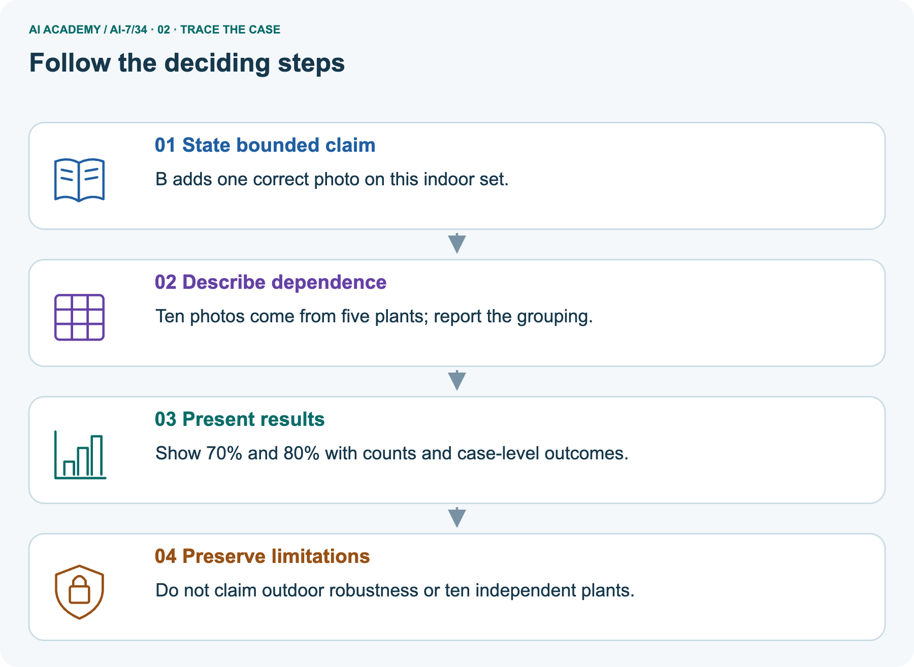
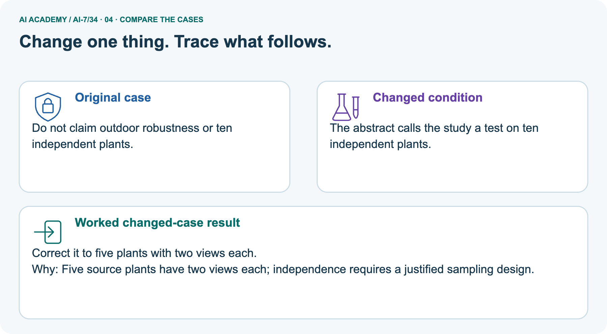
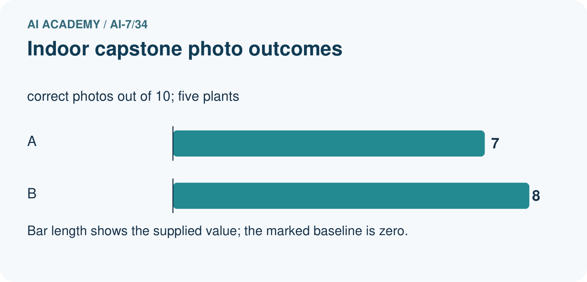
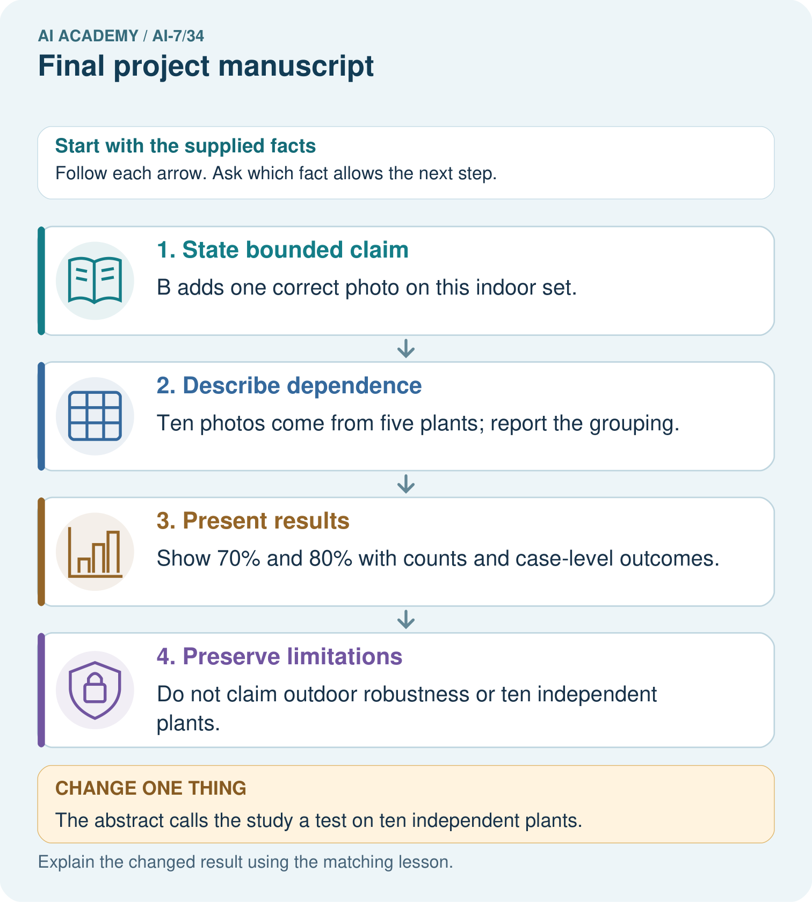
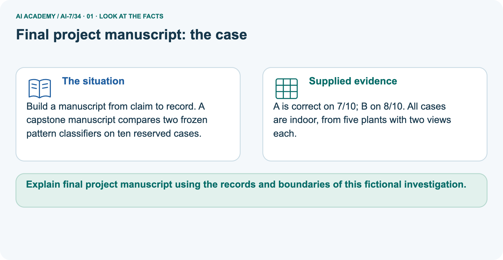
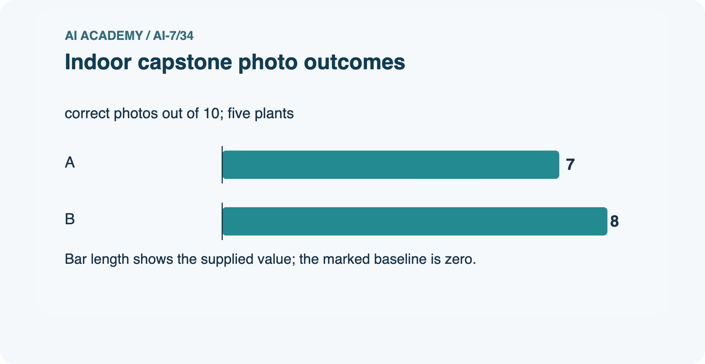
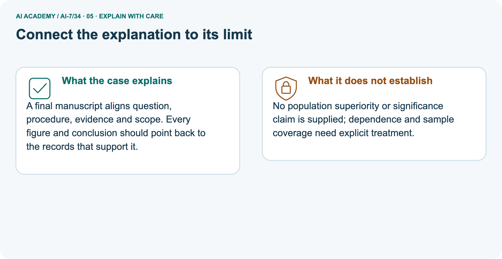
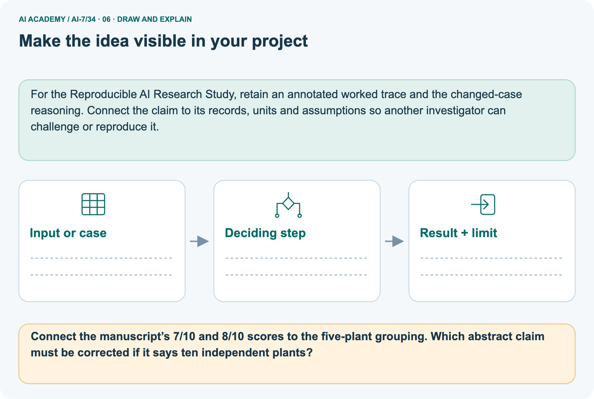

AI Academy · Level 7 · Grade 12 · Week 34 · Student lesson
Final project manuscript
Learn to understand, design, build, test and explain AI systems responsibly.
Project: Reproducible AI Research Study
THE CONNECTED WEEK
Align every manuscript claim with the correct recorded result
Preserve failures, grouping and missing outcomes consistently across abstract, tables, figures and artifacts.
Keep one habit: Question and contract → complete main ledger → separate picture → boundary probes → investigation → independent attempt.
Main lesson · Section 1
Align every manuscript claim with the correct recorded result
Preserve failures, grouping and missing outcomes consistently across abstract, tables, figures and artifacts.
Learning goals
I can explain the mechanism and terminology of final project manuscript.
I can apply the stated procedure to a new case with a traceable result.
I can identify an assumption or limitation and design a revealing follow-up.
Retrieve before reading
Close your notes first. A rough first answer helps us choose the right starting point; it is not a score for your ability.
Without opening the old lesson, explain one key idea from Independent reproduction check. Give an example and a mistake that the idea helps you avoid.
Without opening the old lesson, explain one key idea from Writing results and limitations. Give an example and a mistake that the idea helps you avoid.
Without opening the old lesson, explain one key idea from Negative results and claim revision. Give an example and a mistake that the idea helps you avoid.
After trying, check the relevant lesson or ask your teacher. Change the part of your explanation that the evidence shows was wrong.
Starting explanation
Recall Independent reproduction check. Explain why a recorded result needs its input conditions and evidence source before it can support a claim.
End goal
Explain final project manuscript using the records and boundaries of this fictional investigation.
Earlier wording, alternatives and picture transcripts
Your learning target
Remember before reading
This week you will practise:
Explain the mechanism and terminology of final project manuscript
Apply the stated procedure to a new case with a traceable result
Identify an assumption or limitation and design a revealing follow-up
Retrieve what you already know
This week’s end goal
Main lesson · Section 2
Understand the question and evidence contract
Preserve failures, grouping and missing outcomes consistently across abstract, tables, figures and artifacts.
Start with the research problem
A final manuscript is one connected account of question, design, results and limits. Its abstract must not promise more than the tables or records establish. Check each headline against the correct run, denominator and outcome. When a figure omits failures, fix both the figure and the claim; adding a footnote while leaving a false headline is not enough.
Distinguish exploratory revisions and unassessed outcomes from the original evaluated set.
Original concept explanation
A final manuscript integrates question, methods, results, limitations and reproducibility. Each table and claim should point to the correct run.
Complete case inputs, rules and limits
| Manuscript item | Complete supplied exercise contract |
|---|---|
| Main raw result | Eighteen passes among twenty evaluated cases; two failures |
| Main inconsistency | Abstract says 100%; figure omits two failures |
| Required main correction | 90% over twenty with two failures visible throughout |
| Separate picture | A correct 7/10, B 8/10; all photos indoor |
| Picture grouping | Five plants, two views each; ten photos total |
| Independence evidence | Five identities are not proof of independent sampling |
| Artifact linkage | Each claim points to its actual run, data and version; do not invent identifiers |
| Unknown properties | Population superiority, significance, outdoor performance and detailed case outcomes |
Name given and missing evidence
Earlier wording, alternatives and picture transcripts
Begin by writing the question the procedure is intended to answer. Identify the information already supplied, the information it will produce and the information still missing.
These are constructed classroom examples; they do not require live accounts, private records or an external service. Do not treat a plausible explanation as a measured outcome.
Main lesson · Section 3
Trace the complete main case before interpreting it
Follow each evidence-to-conclusion step and retain unknown quantities.
Original declared procedure
Audit consistency across abstract, figures, raw results and artifact manifest. Remove unsupported universal claims; label exploratory analyses and unassessed outcomes.
Complete main-case evidence ledger
| Main manuscript location | Current inconsistency | Supported correction |
|---|---|---|
| Raw results table | 18/20 | Keep original twenty-case record |
| Abstract | 100% success | 18/20 = 90% on these evaluated cases |
| Figure | Two failures absent | Restore both failures and total twenty |
| Failure count | Hidden by headline/figure | Two failures explicitly reported |
| Run/artifact references | Need consistency | Identify the actual linked record; no fabricated IDs |
| Broader claim | Not established | Keep case/outcome scope attached |
State the scope and explain the visual
Before applying the procedure, write its units, denominator or decision boundary where relevant. A partner should be able to repeat each step using the same inputs.
If a required input is absent or violates the stated contract, record that condition explicitly instead of quietly replacing it with a convenient value.
Point to the input, the deciding step and the result in this week’s visual. Explain the same step in ordinary words. A picture helps when you can say what each part represents.
Earlier wording, alternatives and picture transcripts
Final project manuscript — evidence trace
Connect the picture and the explanation
Main lesson · Section 4
Predict the changed case before reading the explanation
Keep the rule and evidence boundary visible.
Main task and response
Abstract says 100% success; results table shows 18/20, and two failures are omitted from the figure. Show the intermediate steps and give the conclusion with its scope.
Predict the pictured change
Change: The abstract calls the study a test on ten independent plants.
Check after predicting
Prediction: Correct it to five plants with two views each.
Reason: Five source plants have two views each; independence requires a justified sampling design.
Earlier wording, alternatives and picture transcripts
Compare a familiar case with a changed case
Change one thing in the pictured case
Main lesson · Section 6
Connect the main result with the separate pictured case
Keep the two scenarios and their supplied evidence distinct.
Main case and original checked reasoning
Abstract says 100% success; results table shows 18/20, and two failures are omitted from the figure.
Correct to 90% over 20 with two failures; restore figure and align abstract/table/run. Do not hide failures to preserve the headline.
Compare the intermediate evidence with the final statement. Explain why each number or decision follows from the stated inputs.
The conclusion belongs to this scenario and procedure; changing the inputs, evaluation population or authority can change what it establishes. Retain the raw record so a later revision can be compared honestly.
Separate pictured inputs and complete explanation
Build a manuscript from claim to record. A capstone manuscript compares two frozen pattern classifiers on ten reserved cases.
A is correct on 7/10; B on 8/10. All cases are indoor, from five plants with two views each.
The separate capstone picture compares A seven correct of ten photos and B eight correct of ten: 70% and 80%, a one-photo or ten-percentage-point observed difference. Those ten indoor photos come from five plants with two views each. They are not ten independent plants, and five source identities alone do not establish independent sampling. Report grouping and use analysis assumptions justified for the actual design.
No per-case output table is supplied here, so do not invent which photos changed or a plant-level score. A final manuscript can report the supplied photo-level counts while clearly acknowledging indoor coverage, repeated views and absent population/significance evidence.
Read the labelled representation




Read the picture one step at a time
A final manuscript aligns question, procedure, evidence and scope. Every figure and conclusion should point back to the records that support it.
Complete picture evidence and limits
| Separate capstone record | Supported value or limit |
|---|---|
| A photo correctness | 7/10 = 70% |
| B photo correctness | 8/10 = 80% |
| Observed difference | One correct photo; ten percentage points |
| Source grouping | Five plants × two views = ten photos |
| Setting | Indoor only |
| Ten independent plants claim | Wrong count and unsupported independence premise |
| Five plant identities | Correct source count; sampling independence still needs justification |
| Case-level and plant-level outcomes | Not supplied; do not reconstruct them |
| Outdoor / population / significance | Not established |
Predict the changed condition
Change one thing: The abstract calls the study a test on ten independent plants. Predict the result before checking the explanation. What remains the same?
Check after predicting



Explain what remains unknown
No population superiority or significance claim is supplied; dependence and sample coverage need explicit treatment.
Read the labelled picture: Connect the manuscript’s 7/10 and 8/10 scores to the five-plant grouping. Which abstract claim must be corrected if it says ten independent plants?
Earlier wording, alternatives and picture transcripts
Learn from the worked case
Cover the result before checking it. Say what is given, choose the procedure, and follow one step at a time. Then uncover the result and explain your first mismatch. Ask why a step is allowed, not only what number it produces.
A pictorial worked case: Final project manuscript
The facts we will use






Why this result follows
What this example does not establish
Main lesson · Section 7
Find the first unsupported inference and repair it
Use the supplied conditions rather than inventing missing evidence.
Original qualification and repair setup
A manuscript is ready only when its claims and artifacts align; formatting alone cannot certify evidence.
A useful check asks what would make the reasoning fail. Distinguish a failure to execute the declared procedure from a weakness in the procedure itself.
The first may require a correction; the second requires an explicitly revised method and new evidence. Preserve unsuccessful cases so an improved result cannot hide the original problem.
Complete boundary and misconception probes
| Manuscript audit | Checked interpretation |
|---|---|
| Abstract 100%, raw 18/20 | Correct headline to 90%; retain two failures |
| Figure hides failures | Restore them and denominator, not just a caveat |
| One manuscript has multiple runs | Point every table/claim to the correct version |
| Ten photos from five plants | Report repeated source views |
| Plant IDs are distinct | Not automatic sampling independence |
| Raw case-level outputs absent | Do not invent transitions or a plant-level score |
| Two missing cases | Report coverage and unassessed status, not evaluated-as-complete |
| Polished manuscript | Does not create evidence or erase limitations |
Write and justify the repair
A report omits this qualification: A manuscript is ready only when its claims and artifacts align; formatting alone cannot certify evidence.
Explain how omitting it could change a reader's interpretation, and write an accurate replacement.
Earlier wording, alternatives and picture transcripts
Locate the earliest unsupported step
Main lesson · Section 8
Practise the mechanism with progressively less help
Keep the selected independent case for a first attempt.
Shared explanation
Explain the weekly mechanism in your own words. Use the worked scenario to name its input, decision rule and output.
Supported workbook trace
Use workbook W2 for the connected example “Final project manuscript”. First fill the input and rule boxes. Try the middle steps before asking for a hint. After a hint, try the next step yourself.
| Plan | Do | Check |
|---|---|---|
| What is given? Which rule or procedure applies? | Record each intermediate step. | Does the result follow? What remains unknown? |
Explain your trace to a partner. Your partner points to one step to check. Swap roles on the next case. Each person writes their own explanation.
Individual scope check
Use the worked case for Final project manuscript. Proposed explanation: “The worked result establishes every future case”. Decide whether this explanation is supported.
Point to the step or supplied fact that decides; explain your repair if needed.
Answer on your own before discussion. If you are unsure, say which step you need help with.
Picture response
Connect the manuscript’s 7/10 and 8/10 scores to the five-plant grouping. Which abstract claim must be corrected if it says ten independent plants?
Reserve the independent task
This is supported practice. Keep the separately named independent case for an attempt before feedback.
Earlier wording, alternatives and picture transcripts
Practise with less help: Trace the worked case
Check your reasoning
Explain the picture
Main lesson · Section 9
Investigate, record the evidence and check the limits
Distinguish a prediction, a paper trace and an actual local execution.
Current investigation
Abstract says 100% success; results table shows 18/20, and two failures are omitted from the figure. Show the intermediate steps and give the conclusion with its scope.
Complete investigation instructions
Perform a paper consistency audit of the abstract, table, figure and run reference. Repair the main result to eighteen of twenty, ninety percent, with two failures retained in every view. Use actual artifact identifiers only when provided; otherwise mark them not supplied. For the separate picture, connect 7/10 and 8/10 photo counts to five plants with repeated views, correcting the ten-independent-plants claim.
Keep independence justification and case-level outputs unresolved rather than inventing them. This exercise edits a fictional manuscript account, not a real experiment. Reserve the independent completed/missing-case summary.
Evidence record and reflection
| Record | Your evidence |
|---|---|
| Given input and fixed rule | |
| Prediction before checking | |
| Actual result, or “not run” | |
| First mismatch and one explanation | |
| Boundary or missing input and expected response |
On paper, trace the supplied procedure. If code is provided, predict before running it in a local practice file. Never write an expected answer as though it were an observed run.
Before trying: what do I expect, and why? While trying: which step could first go wrong? Afterwards: what did I actually observe, and what should change? Keep “not run” if you only traced the procedure.
Earlier wording, alternatives and picture transcripts
Predict, investigate and preserve the evidence
Plan → try → check
Main lesson · Section 14
Try the selected new case independently
Correct the summary using completed-case performance, coverage and explicit missing outcomes, retaining the metric denominator.
Complete independent task
Manuscript says 12 evaluated cases, raw record has 10 completed and 2 missing with 8 passes. Correct the summary.
First attempt and support record
Attempt this case before feedback. Record any help. Earlier examples below are further practice; a case already practised with feedback cannot establish fresh transfer.
Feedback after trying
Attempt the independent case before hints. Record whether you worked alone, used a hint or followed a model. After feedback, fix the first unsupported step and explain why it changed.
A later check uses a changed case, not a copied answer.
Earlier wording, alternatives and picture transcripts
Independent case: Apply a new case independently
Attempt this without hints
Manuscript says 12 evaluated cases, raw record has 10 completed and 2 missing with 8 passes. Correct the summary.
Record support used: none, hint or teacher explanation. After feedback, a different case is needed to demonstrate independence.
Use feedback to improve
Main lesson · Section 11
Save the research artifact and unresolved conditions
Keep supplied evidence, proposed revisions and actual work distinct.
Project task and artifact
For Reproducible AI Research Study, use this week’s independent task as a rehearsal for the final evidence pack: Manuscript says 12 evaluated cases, raw record has 10 completed and 2 missing with 8 passes. Correct the summary. Keep actual observations separate from expected results, preserve failures, compare a baseline and explain the limits.
| Project evidence | Record |
|---|---|
| Component and version | |
| Inputs permitted at prediction time | |
| Trace and comparison with earlier work | |
| Failure, limit and human review |
Evidence and limitations
For the Reproducible AI Research Study, retain an annotated worked trace and the changed-case reasoning. Connect the claim to its records, units and assumptions so another investigator can challenge or reproduce it.
Earlier wording, alternatives and picture transcripts
Evidence for your project
Main lesson · Section 16
Retrieve the mechanism and state the evidence boundary
Explain what follows and what would require new evidence.
Retrieve and explain
Close your notes. Explain this goal in your own words: Explain the mechanism and terminology of final project manuscript
Plan a changed-case return
If you are unsure, return to the worked picture and explain one arrow. If you are ready, change an input or assumption and justify your prediction.
Save your workbook evidence. At the next review, try a different case before opening your old answer.
Reference bank and extra practice
Choose the reference that helps your next step.
Reference · Use research vocabulary precisely
Reference · Section 5
Reference · Use research vocabulary precisely
Connect each term to the question, comparison, measurement or evidence.
Vocabulary and your explanation
| Word | Meaning |
|---|---|
| Manuscript audit | A consistency check across research records and prose |
| Run linkage | Connecting reported numbers to exact results |
| Evidence alignment | Agreement between claims and their supporting artifacts |
Extra challenge · Explain a stronger case
Reference · Section 10
Extra challenge · Explain a stronger case
Choose the next challenge after the main route.
Explain,repair and extend
Explain the weekly mechanism in your own words. Use the worked scenario to name its input, decision rule and output.
A report omits this qualification: A manuscript is ready only when its claims and artifacts align; formatting alone cannot certify evidence.
Explain how omitting it could change a reader's interpretation, and write an accurate replacement.
For the worked scenario, propose one additional case that could reveal a failure, describe its expected outcome before running it, and explain what would need to remain fixed for a fair comparison.
Do not reuse W4 as a new final test after receiving feedback.
Explain → apply → challenge
Reference · Check the research reasoning and its limits
Reference · Section 12
Reference · Check the research reasoning and its limits
Use after practice; reserve the selected independent case for its first attempt.
Current explanation and response
Complete the supported workbook tasks before attempting W4 independently. Record any hints or help used. After feedback, use the teacher's fresh retry rather than copying the earlier answer.
For a project, select a relevant new case, predict the outcome from the declared rule and preserve the result alongside any revision.
For the worked scenario, propose one additional case that could reveal a failure, describe its expected outcome before running it, and explain what would need to remain fixed for a fair comparison.
Do not reuse W4 as a new final test after receiving feedback.
Extra practice · Revisit the complete trace
Reference · Section 13
Extra practice · Revisit the complete trace
Predict before reading the supplied steps.
Complete trace and evidence
Complete evidence record
Final project manuscript — evidence trace
Follow the input through the stated procedure to its result. Cover the result first, predict it, then explain every intermediate step. The text/table accompanies the figure so the example can be read without colour.
Reference · The earlier route checklist
Reference · Section 15
Reference · The earlier route checklist
Use one main route rather than repeating the lesson.
Targets,route and first prediction
Start with this question: Build a manuscript from claim to record. A capstone manuscript compares two frozen pattern classifiers on ten reserved cases.
| By the end, I can | How I will show it |
|---|---|
| Explain the mechanism and terminology of final project manuscript | Explain the deciding step, show a trace or test, and state one limit. |
| Apply the stated procedure to a new case with a traceable result | Explain the deciding step, show a trace or test, and state one limit. |
| Identify an assumption or limitation and design a revealing follow-up | Explain the deciding step, show a trace or test, and state one limit. |
Remember → watch and explain → try with help → investigate → try independently → keep project evidence. Your teacher may spread this lesson across several classes.
Keep your first prediction. Compare it with what the evidence shows and explain any change.
Extra practice · Predict,check and repair
Reference · Section 17
Extra practice · Predict,check and repair
Keep supported feedback separate from the independent case.
First supported question and optional hint
Build a manuscript from claim to record. A capstone manuscript compares two frozen pattern classifiers on ten reserved cases.
Which labelled step matches this detail? Do not claim outdoor robustness or ten independent plants.
1. Present results
2. Describe dependence
3. State bounded claim
4. Preserve limitations
Hint if needed: Read the steps in the pictorial case. Match the supplied detail to the stage that performs or records it.
Practice 1: explain the deciding evidence
Check after the first attempt
After your attempt, compare with the supported explanation: Preserve limitations Do not claim outdoor robustness or ten independent plants. A final manuscript aligns question, procedure, evidence and scope.
Every figure and conclusion should point back to the records that support it.
Changed-case question and optional hint
Changed-case practice: The abstract calls the study a test on ten independent plants. Which conclusion is supported by the supplied facts?
1. We can decide the result without examining the changed input or the procedure.
2. Correct it to five plants with two views each.
3. This one example guarantees correct results for every future input.
Hint if needed: Use the changed condition and the deciding step in the pictorial trace. The answer must say what follows from those facts.
Practice 2: explain the deciding evidence
Check after the changed attempt
After your attempt, compare with the supported explanation: Correct it to five plants with two views each. Five source plants have two views each; independence requires a justified sampling design.
Repair and retain the record
Review Independent reproduction check (ai-7/33). Goal: Explain the mechanism and terminology of independent reproduction check. Short practice: Locate the Q3 scoring disagreement between 5/6 and 4/6.
What should the teams inspect before choosing a score, and what limitation follows if the saved Q3 file is missing?. Return to this week and explain what you changed.
Review Writing results and limitations (ai-7/31). Goal: Explain the mechanism and terminology of writing results and limitations. Short practice: Compute the supported-answer rates for 9/12 and 10/12.
What actual outcome was measured, and why is a claim that every student becomes smarter outside this evidence?. Return to this week and explain what you changed.
Review Negative results and claim revision (ai-7/28). Goal: Explain the mechanism and terminology of negative results and claim revision. Short practice: Does a 6/8 tie support the prediction that B scores higher?
Explain why one newly selected favourable demonstration does not replace the original result or prove equivalence.. Return to this week and explain what you changed.
Use Download completed work in the hosted lesson to export your answers, reflections, practice feedback and code-run evidence. Open the HTML copy to read or print it.
Drafts stay in this browser when storage is available; clear drafts on a shared device.
Earlier wording, alternatives and picture transcripts
Use this supported practice once, in the browser or on paper. Keep the reserved independent assessment for a separate first attempt before teacher feedback.
Repair a missing building block
Keep your completed work
Reference · Six-picture concept journey
Reference · Section 18
Reference · Six-picture concept journey
Choose the picture that supports the current explanation.
01. Final project manuscript: the case



Build a manuscript from claim to record. A capstone manuscript compares two frozen pattern classifiers on ten reserved cases. Supplied facts: A is correct on 7/10; B on 8/10.
All cases are indoor, from five plants with two views each.
Point to the given fact that matters most. Explain why it matters.
02. Follow the deciding steps
State bounded claim: B adds one correct photo on this indoor set. → Describe dependence: Ten photos come from five plants; report the grouping. → Present results: Show 70% and 80% with counts and case-level outcomes. → Preserve limitations: Do not claim outdoor robustness or ten independent plants.
Point to each numbered stage and explain which recorded input it uses.
03. Indoor capstone photo outcomes



Indoor capstone photo outcomes. Units: correct photos out of 10; five plants. A: 7. B: 8.
Read the labels and values. Explain the relationship the model shows.
04. Change one thing. Trace what follows.
Original case: Do not claim outdoor robustness or ten independent plants. Changed condition: The abstract calls the study a test on ten independent plants. Expected result: Correct it to five plants with two views each. Reason: Five source plants have two views each; independence requires a justified sampling design.
Predict before checking the worked changed-case result. Name what changed and what the supplied facts allow you to conclude.
05. Connect the explanation to its limit



A final manuscript aligns question, procedure, evidence and scope. Every figure and conclusion should point back to the records that support it.
Limit: No population superiority or significance claim is supplied; dependence and sample coverage need explicit treatment.
Explain the case, then point to a limit on the claim.
06. Make the idea visible in your project



For the Reproducible AI Research Study, retain an annotated worked trace and the changed-case reasoning. Connect the claim to its records, units and assumptions so another investigator can challenge or reproduce it.
Draw your input, deciding step, result and limit. Supported question: Connect the manuscript’s 7/10 and 8/10 scores to the five-plant grouping. Which abstract claim must be corrected if it says ten independent plants?
Draw your project trace and justify the deciding step using evidence.